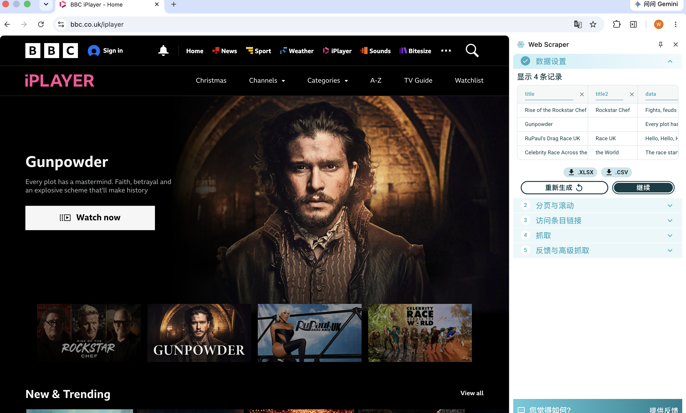
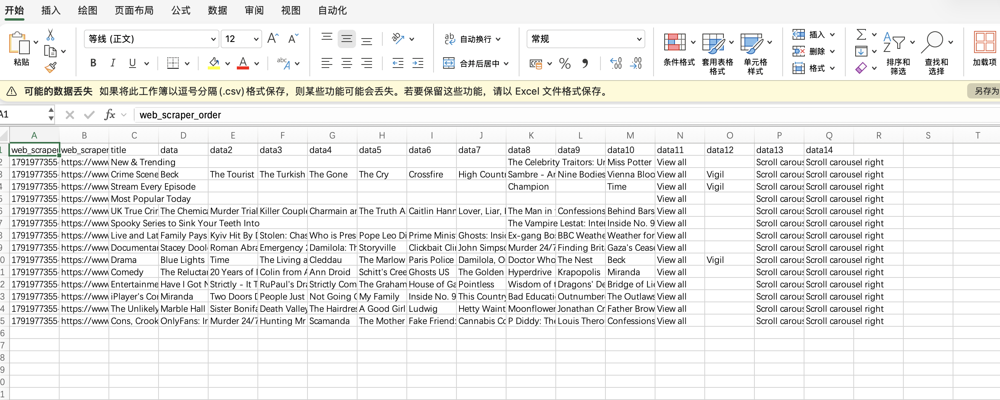
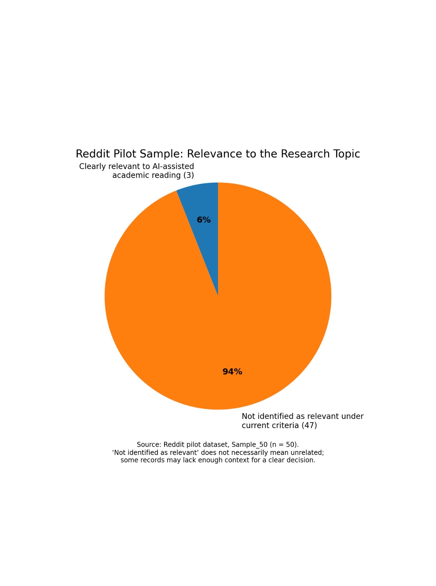

A PERSONAL PORTFOLIO · 2026
Hello,
I'm Cathy.
A little about me, the things I enjoy, and the ideas I collect along the way.
Welcome to my personal space. I enjoy exploring new ideas, noticing the details around me and finding inspiration in everyday life. This website brings together my interests and a record of what I learn each week.
DISCOVER MY INTERESTS ↗ON.
02 / OUTSIDE THE FRAME
Things
I Love.
Tennis is my kind of reset.
I enjoy the rhythm of the game, the focus it requires and the feeling of being active. Time on the court gives me a chance to step away from daily routines, enjoy the moment and challenge myself.
03 / MY LEARNING JOURNEY
Course
Reflections.
A collection of classroom experiences, new ideas and personal thoughts. Choose a week to open its page.
TO
GROW.
COURSE JOURNAL / 01
Week Two.
Learning the Basics of Website Creation
LEARN · CREATE · REFLECT
Workshop Reflection: Learning the Basics of Website Creation
In this workshop, I learned some basic knowledge about website creation and had the opportunity to explore different ways of building a website. Before this class, I had very limited experience with HTML and CSS, so I was not very familiar with how a website is structured or how its appearance is controlled.
During the workshop, I learned about two different approaches to creating a website. The first was using CampusPress, which is based on WordPress and allows users to create websites through a content management system. The second was building a webpage directly using HTML and CSS. I found that using CampusPress was more straightforward for beginners, while coding with HTML and CSS gave me more freedom to control the layout and design.
I also learned how to connect an external CSS file to an HTML document. This helped me understand that HTML is mainly used to organise the content of a webpage, while CSS controls its visual appearance, such as colours, fonts, spacing and layout. In addition, we explored how to upload website files to GitHub and publish them using GitHub Pages.
At first, some of the technical steps were a little confusing, especially making sure that the file names and links were correct. However, by following the instructions and trying things out myself, I gradually understood how the different parts work together.
Overall, this workshop gave me a better understanding of the basic process of website development. I also realised that creating a website is not only about writing code, but also about thinking carefully about its structure, design and user experience. I hope to continue practising these skills and use them to develop my own digital portfolio in the future.
NEXT CHAPTER →COURSE JOURNAL / 02
Week Three.
Exploring BBC iPlayer with Web Scraper
EXPLORE · COLLECT · ANALYSE
WORKSHOP REFLECTION / 02
Exploring BBC iPlayer with Web Scraper
In this workshop, I learned how to use Web Scraper to collect information from websites. Using BBC iPlayer as an example, I explored how to create a sitemap, use different selectors and extract programme information. I also learned how parent and child selectors work together and how to check collected data through the Data Preview function.
One of the main difficulties was choosing the correct HTML elements and selectors. Sometimes, the preview showed the expected information, but the full scraping process did not work as expected. I realised that website structures and dynamic content can affect the results, so choosing and adjusting selectors requires patience and repeated testing.
Overall, this workshop helped me understand the basic process of web scraping and how website information can be collected and organised into data. It also made me realise that automated tools are not always completely accurate, and the results still need to be checked carefully.


WEEK 04 / WORKSHOP REFLECTION
Data
Collection
GENERATIVE AI & ACADEMIC LITERATURE
DATA · POWER · REPRESENTATION
Week 4: Data Collection – Reflection
In Week 4, our group explored how students use generative AI when reading academic literature. We were interested in how students use AI to ask questions, summarise academic papers, find sources and solve language problems. We also considered the pressure that international students may experience when reading academic literature.
One of the biggest challenges was collecting and organising data from different online platforms. The information was not always presented in the same format, and some data was incomplete or unclear. It was also difficult to understand people’s real opinions by only looking at titles and short descriptions. This made it hard for us to make consistent decisions when classifying the data.
Through this task, I learned that collecting more data does not always mean getting better results. The quality, accuracy and relevance of data are very important. I also realised that online opinions may not fully represent students’ real experiences. If we had more time, I would prefer to read the full content of each post, collect more detailed information and use clearer categories to improve our analysis.
Another important thing I learned was the relationship between data and power. As discussed by D’Ignazio and Klein, data is not completely neutral. Researchers make decisions about what information to collect and how to classify it. These decisions can influence the final results and which perspectives are represented.
Overall, this workshop helped me understand that data collection is not just about gathering information. It also requires critical thinking about where the data comes from, what information is missing and how our choices may influence the findings.
COURSE JOURNAL / 05
Week Five.
GENERATIVE AI / ACADEMIC READING / DATA ANALYSIS
Data Collection and Analysis
In Week 5, our group continued exploring how students use generative AI when reading academic literature. We collected data from Reddit, TikTok and YouTube, and compared our findings with existing research reports.
One challenge was that different platforms provided information in different formats. Titles and captions did not always show the full meaning, and some posts lacked context. In our Reddit pilot sample, only 3 out of 50 records (6%) were clearly related to AI-assisted academic reading.
Another difficulty was classifying posts consistently and comparing online data with published research. Different studies used different samples and methods, which made the comparison more challenging.
Through this workshop, I learned that data quality, relevance and context are more important than simply collecting more data. Online information cannot fully represent students' real experiences. Careful data selection and critical thinking are essential when analysing data.
